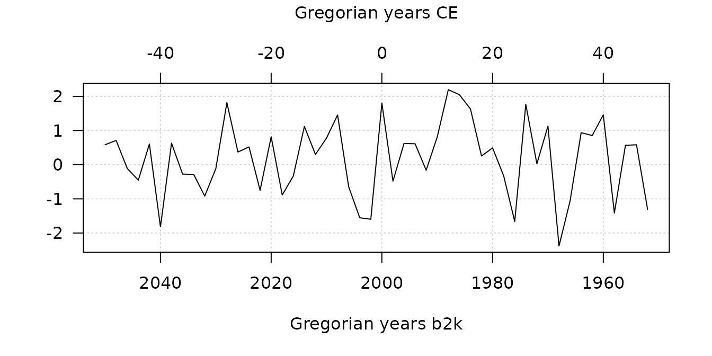

Base R ships with a lot of functionality useful for time series, in particular in the stats package. However, these features are not adapted to most archaeological time series. These are indeed defined for a given calendar era, they can involve dates very far in the past and the sampling of the observation time is (in most cases) not constant. aion provides a system of classes and methods to represent and work with such time-series.
Calendars
aion currently supports both Julian and Gregorian
calendars (with the most common eras for the latter, e.g. Before
Present, Common Era…). A calendar can be defined using the
calendar() function:
## Create a calendar object
## (Gregorian Common Era)
calendar("CE")
#> Common Era (CE): Gregorian years counted forwards from 0.Or by using the shortcuts:
## Common Era (Gregorian)
CE()
#> Common Era (CE): Gregorian years counted forwards from 0.
## Before Present (Gregorian)
BP()
#> Before Present (BP): Gregorian years counted backwards from 1950.When creating date vectors or time series, you must specify the calendar corresponding to your data (see below). This allows to select the correct method for converting dates to rata die.
Outputs generated by aion are expressed in rata die
by default (this can be modified on a per-function basis). The
only two exceptions are the plot() and
format() functions, which default to the calendar specified
in the package options (see below). You can change the default calendar
to be used throughout the package by modifying the
aion.calendar option, or on a per-function basis.
## Get default calendar
getOption("aion.calendar")
#> Common Era (CE): Gregorian years counted forwards from 0.Vectors of dates
In base R, dates are represented by default as the number of days
since 1970-01-01 (Gregorian), with negative values for earlier dates
(see help(Date)). aion uses a different
approach: it allows to create date vectors represented as rata
die (Reingold and Dershowitz 2018), i.e. as number of days since
01-01-01 (Gregorian)1.
This makes it possible to get rid of a specific calendar and to make calculations easier. It is then possible to convert a vector of rata die into dates or (decimal) years of any calendar.
The fixed() function allows to create a vector of
rata die from dates belonging to a specific calendar:
## Convert 2000-02-29 (Gregorian) to rata die
fixed(2000, 02, 29, calendar = calendar("CE"))
#> Rata die: number of days since 01-01-01 (Gregorian).
#> [1] 730179
## If days and months are missing, decimal years are expected
fixed(2000.161, calendar = calendar("CE"))
#> Rata die: number of days since 01-01-01 (Gregorian).
#> [1] 730179A rata die vector can be converted into dates (or years) of a particular calendar:
## Create a vector of 10 years BP (Gregorian)
## (every 20 years starting from 2000 BP)
(years <- seq(from = 20000, by = -20, length.out = 10))
#> [1] 20000 19980 19960 19940 19920 19900 19880 19860 19840 19820
## Convert years to rata die
(rd <- fixed(years, calendar = calendar("BP")))
#> Rata die: number of days since 01-01-01 (Gregorian).
#> [1] -6592992 -6585687 -6578382 -6571077 -6563772 -6556467 -6549162 -6541857
#> [9] -6534553 -6527248
## Convert back to Gregorian years
as_year(rd, calendar = calendar("CE")) # Common Era
#> [1] -18050 -18030 -18010 -17990 -17970 -17950 -17930 -17910 -17890 -17870
as_year(rd, calendar = calendar("BP")) # Before Present
#> [1] 20000 19980 19960 19940 19920 19900 19880 19860 19840 19820
as_year(rd, calendar = calendar("b2k")) # Before 2000
#> [1] 20050 20030 20010 19990 19970 19950 19930 19910 19890 19870Rata die can be represented as (nicely formated) character vectors:
format(rd) # Default calendar (Gregorian Common Era)
#> [1] "-18050 CE" "-18030 CE" "-18010 CE" "-17990 CE" "-17970 CE" "-17950 CE"
#> [7] "-17930 CE" "-17910 CE" "-17890 CE" "-17870 CE"
format(rd, prefix = "ka", calendar = calendar("BP"))
#> [1] "20 ka BP" "19.98 ka BP" "19.96 ka BP" "19.94 ka BP" "19.92 ka BP"
#> [6] "19.9 ka BP" "19.88 ka BP" "19.86 ka BP" "19.84 ka BP" "19.82 ka BP"The rata die vector provides the internal time representation of the aion time-series (if you want to work with numeric vectors that represent year-based time scales, you may be interested in the era package).
Time series
A time series is a sequence of observation time and value pairs with strictly increasing observation times.
A time series object is an \(n \times m
\times p\) array, with \(n\)
being the number of observations, \(m\)
being the number of series and with the \(p\) columns of the third dimension
containing extra variables for each series. It can be created from a
numeric vector, matrix or
array.
## Get ceramic counts (data from Husi 2022)
data("loire", package = "folio")
## Keep only variables whose total is at least 600
keep <- c("01f", "01k", "01L", "08e", "08t", "09b", "15i", "15q")
## Get time midpoints
mid <- rowMeans(loire[, c("lower", "upper")])
## Create time-series
(X <- series(
object = loire[, keep],
time = mid,
calendar = calendar("AD")
))
#> 332 x 8 x 1 time series observed between 163995 and 661637 r.d.Time series terminal and sampling times can be retrieved and expressed according to different calendars (remember that outputs are expressed in rata die by default):
## Time series duration
span(X) # Default: rata die
#> [1] 497642
## Time of first observation
start(X) # Default: rata die
#> [1] 163995
## Time of last observation
end(X) # Default: rata die
#> [1] 661637
## Sampling times
time(X, calendar = BP())
#> [1] 1500.0 1475.0 1475.0 1463.5 1450.0 1450.0 1450.0 1450.0 1438.5 1438.5
#> [11] 1438.5 1425.0 1413.5 1400.0 1400.0 1400.0 1400.0 1400.0 1400.0 1400.0
#> [21] 1400.0 1400.0 1400.0 1400.0 1400.0 1400.0 1400.0 1400.0 1400.0 1400.0
#> [31] 1388.5 1375.0 1375.0 1375.0 1363.5 1350.0 1350.0 1350.0 1350.0 1350.0
#> [41] 1350.0 1350.0 1350.0 1325.0 1313.5 1313.5 1300.0 1300.0 1300.0 1300.0
#> [51] 1275.0 1275.0 1275.0 1275.0 1263.5 1250.0 1250.0 1250.0 1250.0 1250.0
#> [61] 1250.0 1250.0 1250.0 1250.0 1238.5 1238.5 1238.5 1225.0 1225.0 1225.0
#> [71] 1213.5 1213.5 1213.5 1213.5 1200.0 1200.0 1200.0 1200.0 1188.5 1188.5
#> [81] 1188.5 1188.5 1175.0 1175.0 1175.0 1175.0 1163.5 1163.5 1150.0 1150.0
#> [91] 1150.0 1150.0 1150.0 1150.0 1150.0 1150.0 1150.0 1150.0 1150.0 1150.0
#> [101] 1150.0 1150.0 1150.0 1150.0 1150.0 1150.0 1150.0 1150.0 1150.0 1150.0
#> [111] 1150.0 1150.0 1150.0 1150.0 1138.5 1138.5 1138.5 1138.5 1125.0 1125.0
#> [121] 1125.0 1125.0 1125.0 1125.0 1113.5 1113.5 1113.5 1100.0 1100.0 1100.0
#> [131] 1100.0 1100.0 1100.0 1100.0 1100.0 1100.0 1100.0 1100.0 1100.0 1088.5
#> [141] 1088.5 1075.0 1075.0 1075.0 1050.0 1050.0 1050.0 1050.0 1050.0 1050.0
#> [151] 1050.0 1050.0 1050.0 1050.0 1050.0 1050.0 1050.0 1050.0 1050.0 1050.0
#> [161] 1050.0 1038.5 1038.5 1038.5 1038.5 1038.5 1038.5 1025.0 1025.0 1025.0
#> [171] 1025.0 1025.0 1025.0 1025.0 1013.5 1013.5 1013.5 1013.5 1013.5 1013.5
#> [181] 1013.5 1000.0 1000.0 1000.0 1000.0 1000.0 1000.0 1000.0 1000.0 1000.0
#> [191] 1000.0 1000.0 1000.0 988.5 963.5 963.5 963.5 950.0 950.0 950.0
#> [201] 950.0 950.0 950.0 950.0 950.0 950.0 950.0 950.0 950.0 950.0
#> [211] 950.0 950.0 950.0 950.0 950.0 938.5 925.0 925.0 925.0 925.0
#> [221] 925.0 925.0 925.0 913.5 913.5 900.0 900.0 900.0 900.0 900.0
#> [231] 900.0 900.0 900.0 900.0 900.0 875.0 875.0 875.0 863.5 850.0
#> [241] 850.0 850.0 850.0 850.0 850.0 850.0 838.5 825.0 825.0 813.5
#> [251] 813.5 800.0 788.5 775.0 763.5 750.0 725.0 725.0 725.0 713.5
#> [261] 713.5 713.5 700.0 700.0 700.0 700.0 688.5 688.5 675.0 675.0
#> [271] 675.0 663.5 663.5 663.5 663.5 650.0 650.0 650.0 650.0 638.5
#> [281] 638.5 638.5 638.5 625.0 625.0 613.5 613.5 600.0 600.0 600.0
#> [291] 600.0 588.5 575.0 575.0 575.0 538.5 525.0 525.0 525.0 513.5
#> [301] 513.5 500.0 500.0 500.0 475.0 475.0 475.0 475.0 475.0 463.5
#> [311] 450.0 450.0 450.0 425.0 425.0 425.0 425.0 425.0 413.5 363.5
#> [321] 338.5 325.0 313.5 313.5 275.0 250.0 250.0 225.0 188.5 175.0
#> [331] 150.0 138.5Plot one or more time series:
## Multiple plot (default calendar)
plot(
x = X,
type = "h" # histogram like vertical lines
)
## Extract the first series
Y <- X[, 1, ]
## Plot a single series
plot(
Y,
type = "h", # histogram like vertical lines
calendar = b2k(), # b2k time scale
panel.first = graphics::grid() # Add a grid
)
year_axis(side = 3, calendar = CE()) # Add a secondary time axis
mtext(format(CE()), side = 3, line = 3) # Add secondary axis title
Note that aion uses the astronomical notation for Gregorian years (there is a year 0).
References
Reingold, Edward M., and Nachum Dershowitz. 2018. Calendrical Calculations: The Ultimate Edition. 4th ed. Cambridge University Press. https://doi.org/10.1017/9781107415058.